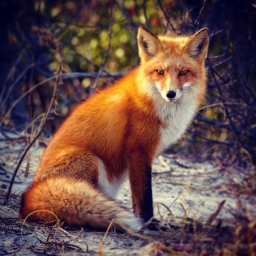

Fox
Fox is a common name for many species of carnivorous mammals belonging to the Canidae family. Foxes are small to medium-sized canids (slightly smaller than the median-sized domestic dog), characterized by possessing a long narrow snout, and a bushy tail (or brush).
Members of about 37 species are referred to as foxes, of which only 12 species actually belong to the Vulpes genus of 'true foxes'. By far the most common and widespread species of fox is the red fox (Vulpes vulpes), although various species are found on almost every continent. The presence of fox-like carnivores all over the globe has led to their appearance in both popular culture and folklore in many cultures around the world (see also Foxes in culture). The gray fox is one of only two canine species known to climb trees; the other is the raccoon dog.